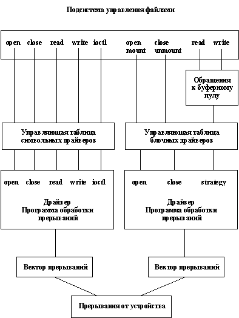

Мы уже обсуждали проблемы организации ввода/вывода в ОС UNIX в п. 2.6.2. В этом разделе мы хотим рассмотреть этот вопрос немного более подробно, разъяснив некоторые технические детали. При этом нужно отдавать себе отчет, что в любом случае мы остаемся на концептуальном уровне. Если вам требуется написать драйвер некоторого внешнего устройства для некоторого конкретного варианта ОС UNIX, то неизбежно придется внимательно читать документацию. Тем не менее знание общих принципов будет полезно.
Традиционно в ОС UNIX выделяются три типа организации ввода/вывода и, соответственно, три типа драйверов. Блочный ввод/вывод главным образом предназначен для работы с каталогами и обычными файлами файловой системы, которые на базовом уровне имеют блочную структуру. В пп. 2.4.5 и 3.1.2 указывалось, что на пользовательском уровне теперь возможно работать с файлами, прямо отображая их в сегменты виртуальной памяти. Эта возможность рассматривается как верхний уровень блочного ввода/вывода. На нижнем уровне блочный ввод/вывод поддерживается блочными драйверами. Блочный ввод/вывод, кроме того, поддерживается системной буферизацией (см. п. 3.3.1).
Символьный ввод/вывод служит для прямого (без буферизации) выполнения обменов между адресным пространством пользователя и соответствующим устройством. Общей для всех символьных драйверов поддержкой ядра является обеспечение функций пересылки данных между пользовательскими и ядерным адресными пространствами.
Наконец, потоковый ввод/вывод (который мы не будем рассматривать в этом курсе слишком подробно по причине обилия технических деталей) похож на символьный ввод/вывод, но по причине наличия возможности включения в поток промежуточных обрабатывающих модулей обладает существенно большей гибкостью.
Традиционным способом снижения накладных расходов при выполнении обменов с устройствами внешней памяти, имеющими блочную структуру, является буферизация блочного ввода/вывода. Это означает, что любой блок устройства внешней памяти считывается прежде всего в некоторый буфер области основной памяти, называемой в ОС UNIX системным кэшем, и уже оттуда полностью или частично (в зависимости от вида обмена) копируется в соответствующее пользовательское пространство.
Принципами организации традиционного механизма буферизации является, во-первых, то, что копия содержимого блока удерживается в системном буфере до тех пор, пока не возникнет необходимость ее замещения по причине нехватки буферов (для организации политики замещения используется разновидность алгоритма LRU, см. п. 3.1.1). Во-вторых, при выполнении записи любого блока устройства внешней памяти реально выполняется лишь обновление (или образование и наполнение) буфера кэша. Действительный обмен с устройством выполняется либо при выталкивании буфера вследствие замещения его содержимого, либо при выполнении специального системного вызова sync (или fsync), поддерживаемого специально для насильственного выталкивания во внешнюю память обновленных буферов кэша.
Эта традиционная схема буферизации вошла в противоречие с развитыми в современных вариантах ОС UNIX средствами управления виртуальной памятью и в особенности с механизмом отображения файлов в сегменты виртуальной памяти (см. пп. 2.4.5 и 3.1.2). (Мы не будем подробно объяснять здесь суть этих противоречий и предложим читателям поразмышлять над этим.) Поэтому в System V Release 4 появилась новая схема буферизации, пока используемая параллельно со старой схемой.
Суть новой схемы состоит в том, что на уровне ядра фактически воспроизводится механизм отображения файлов в сегменты виртуальной памяти. Во-первых, напомним о том, что ядро ОС UNIX действительно работает в собственной виртуальной памяти. Эта память имеет более сложную, но принципиально такую же структуру, что и пользовательская виртуальная память. Другими словами, виртуальная память ядра является сегментно-страничной, и наравне с виртуальной памятью пользовательских процессов поддерживается общей подсистемой управления виртуальной памятью. Из этого следует, во-вторых, что практически любая функция, обеспечиваемая ядром для пользователей, может быть обеспечена одними компонентами ядра для других его компонентов. В частности, это относится и к возможностям отображения файлов в сегменты виртуальной памяти.
Новая схема буферизации в ядре ОС UNIX главным образом основывается на том, что для организации буферизации можно не делать почти ничего специального. Когда один из пользовательских процессов открывает не открытый до этого времени файл, ядро образует новый сегмент и подключает к этому сегменту открываемый файл. После этого (независимо от того, будет ли пользовательский процесс работать с файлом в традиционном режиме с использованием системных вызовов read и write или подключит файл к сегменту своей виртуальной памяти) на уровне ядра работа будет производиться с тем ядерным сегментом, к которому подключен файл на уровне ядра. Основная идея нового подхода состоит в том, что устраняется разрыв между управлением виртуальной памятью и общесистемной буферизацией (это нужно было бы сделать давно, поскольку очевидно, что основную буферизацию в операционной системе должен производить компонент управления виртуальной памятью).
Почему же нельзя отказаться от старого механизма буферизации? Все дело в том, что новая схема предполагает наличие некоторой непрерывной адресации внутри объекта внешней памяти (должен существовать изоморфизм между отображаемым и отображенным объектами). Однако, при организации файловых систем ОС UNIX достаточно сложно распределяет внешнюю память, что в особенности относится к i-узлам. Поэтому некоторые блоки внешней памяти приходится считать изолированными, и для них оказывается выгоднее использовать старую схему буферизации (хотя, возможно, в завтрашних вариантах UNIX и удастся полностью перейти к унифицированной новой схеме).
Для доступа (т.е. для получения возможности последующего выполнения операций ввода/вывода) к файлу любого вида (включая специальные файлы) пользовательский процесс должен выполнить предварительное подключение к файлу с помощью одного из системных вызовов open, creat, dup или pipe. Программные каналы и соответствующие системные вызовы мы рассмотрим в п. 3.4.3, а пока несколько более подробно, чем в п. 2.3.3, рассмотрим другие "инициализирующие" системные вызовы.
Последовательность действий системного вызова open (pathname, mode) следующая:
- анализируется непротиворечивость входных параметров (главным образом, относящихся к флагам режима доступа к файлу);
- выделяется или находится пространство для описателя файла в системной области данных процесса (u-области);
- в общесистемной области выделяется или находится существующее пространство для размещения системного описателя файла (структуры file);
- производится поиск в архиве файловой системы объекта с именем "pathname" и образуется или обнаруживается описатель файла уровня файловой системы (vnode в терминах UNIX V System 4);
- выполняется связывание vnode с ранее образованной структурой file.
Системные вызовы open и creat (почти) функционально эквивалентны. Любой существующий файл можно открыть с помощью системного вызова creat, и любой новый файл можно создать с помощью системного вызова open. Однако, применительно к системному вызову creat мы должны подчеркнуть, что в случае своего естественного применения (для создания файла) этот системный вызов создает новый элемент соответствующего каталога (в соответствии с заданным значением pathname), а также создает и соответствующим образом инициализирует новый i-узел.
Наконец, системный вызов dup (duplicate - скопировать) приводит к образованию нового дескриптора уже открытого файла. Этот специфический для ОС UNIX системный вызов служит исключительно для целей перенаправления ввода/вывода (см. п. 2.1.8). Его выполнение состоит в том, что в u-области системного пространства пользовательского процесса образуется новый описатель открытого файла, содержащий вновь образованный дескриптор файла (целое число), но ссылающийся на уже существующую общесистемную структуру file и содержащий те же самые признаки и флаги, которые соответствуют открытому файлу-образцу.
Другими важными системными вызовами являются системные вызовы read и write. Системный вызов read выполняется следующим образом:
- в общесистемной таблице файлов находится дескриптор указанного файла, и определяется, законно ли обращение от данного процесса к данному файлу в указанном режиме;
- на некоторое (короткое) время устанавливается синхронизационная блокировка на vnode данного файла (содержимое описателя не должно изменяться в критические моменты операции чтения);
- выполняется собственно чтение с использованием старого или нового механизма буферизации, после чего данные копируются, чтобы стать доступными в пользовательском адресном пространстве.
Операция записи выполняется аналогичным образом, но меняет содержимое буфера буферного пула.
Системный вызов close приводит к тому, что драйвер обрывает связь с соответствующим пользовательским процессом и (в случае последнего по времени закрытия устройства) устанавливает общесистемный флаг "драйвер свободен".
Наконец, для специальных файлов поддерживается еще один "специальный" системный вызов ioctl. Это единственный системный вызов, который обеспечивается для специальных файлов и не обеспечивается для остальных разновидностей файлов. Фактически, системный вызов ioctl позволяет произвольным образом расширить интерфейс любого драйвера. Параметры ioctl включают код операции и указатель на некоторую область памяти пользовательского процесса. Всю интерпретацию кода операции и соответствующих специфических параметров проводит драйвер.
Естественно, что поскольку драйверы главным образом предназначены для управления внешними устройствами, программный код драйвера должен содержать соответствующие средства для обработки прерываний от устройства. Вызов индивидуальной программы обработки прерываний в драйвере происходит из ядра операционной системы. Подобным же образом в драйвере может быть объявлен вход "timeout", к которому обращается ядро при истечении ранее заказанного драйвером времени (такой временной контроль является необходимым при управлении не слишком интеллектуальными устройствами).
Общая схема интерфейсной организации драйверов показана на рисунке 3.5. Как показывает этот рисунок, с точки зрения интерфейсов и общесистемного управления различаются два вида драйверов - символьные и блочные. С точки зрения внутренней организации выделяется еще один вид драйверов - потоковые (stream) драйверы (мы уже упоминали о потоках в п. 2.7.1). Однако по своему внешнему интерфейсу потоковые драйверы не отличаются от символьных.

Рис. 3.5. Интерфейсы и входные точки драйверов
Блочные драйверы предназначаются для обслуживания внешних устройств с блочной структурой (магнитных дисков, лент и т.д.) и отличаются от прочих тем, что они разрабатываются и выполняются с использованием системной буферизации. Другими словами, такие драйверы всегда работают через системный буферный пул. Как видно на рисунке 3.5, любое обращение к блочному драйверу для чтения или записи всегда проходит через предварительную обработку, которая заключается в попытке найти копию нужного блока в буферном пуле.
В случае, если копия требуемого блока не находится в буферном пуле или если по какой-либо причине требуется заменить содержимое некоторого обновленного буфера, ядро ОС UNIX обращается к процедуре strategy соответствующего блочного драйвера. Strategy обеспечивает стандартный интерфейс между ядром и драйвером. С использованием библиотечных подпрограмм, предназначенных для написания драйверов, процедура strategy может организовывать очереди обменов с устройством, например, с целью оптимизации движения магнитных головок на диске. Все обмены, выполняемые блочным драйвером, выполняются с буферной памятью. Перепись нужной информации в память соответствующего пользовательского процесса производится программами ядра, заведующими управлением буферами.
Символьные драйверы главным образом предназначены для обслуживания устройств, обмены с которыми выполняются посимвольно, либо строками символов переменного размера. Типичным примером символьного устройства является простой принтер, принимающий один символ за один обмен.
Символьные драйверы не используют системную буферизацию. Они напрямую копируют данные из памяти пользовательского процесса при выполнении операций записи или в память пользовательского процесса при выполнении операций чтения, используя собственные буфера.
Следует отметить, что имеется возможность обеспечить символьный интерфейс для блочного устройства. В этом случае блочный драйвер использует дополнительные возможности процедуры strategy, позволяющие выполнять обмен без применения системной буферизации. Для драйвера, обладающего одновременно блочным и символьным интерфейсами, в файловой системе заводится два специальных файла, блочный и символьный. При каждом обращении драйвер получает информацию о том, в каком режиме он используется.
Как отмечалось в п. 2.7.1, основным назначением механизма потоков (streams) является повышение уровня модульности и гибкости драйверов со сложной внутренней логикой (более всего это относится к драйверам, реализующим развитые сетевые протоколы). Спецификой таких драйверов является то, что большая часть программного кода не зависит от особенностей аппаратного устройства. Более того, часто оказывается выгодно по-разному комбинировать части программного кода.
Все это привело к появлению потоковой архитектуры драйверов, которые представляют собой двунаправленный конвейер обрабатывающих модулей. В начале конвейера (ближе всего к пользовательскому процессу) находится заголовок потока, к которому прежде всего поступают обращения по инициативе пользователя. В конце конвейера (ближе всего к устройству) находится обычный драйвер устройства. В промежутке может располагаться произвольное число обрабатывающих модулей, каждый из которых оформляется в соответствии с обязательным потоковым интерфейсом.
Предыдущая глава | Оглавление | Следующая глава
Comments: [email protected]
Copyright © CIT